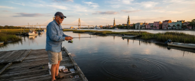
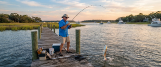
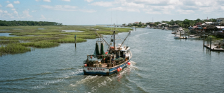
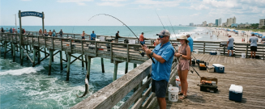
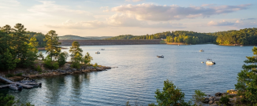
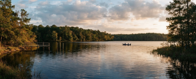
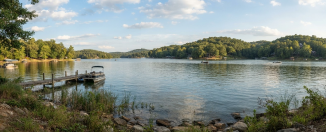
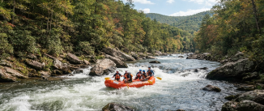

EXPLORE THE BEST
PLACES TO FISH
Saltwater Fishing

Charleston Harbor
Charleston's harbor, creeks, and nearby inlets provide excellent inshore fishing throughout the year. Common catches include redfish, spotted seatrout, flounder, and black drum.

Hilton Head
Fish the tidal creeks, sounds, and coastal waters surrounding one of South Carolina's best-known barrier islands. Common catches include redfish, spotted seatrout, flounder, and sheepshead.

Murrells Inlet
This coastal inlet offers productive fishing from marsh creeks and jetties to nearshore and offshore waters. Common catches include flounder, redfish, black drum, and Spanish mackerel.

Myrtle Beach
Piers, beaches, and offshore waters give anglers a variety of ways to fish along the Grand Strand. Common catches include whiting, pompano, flounder, and Spanish mackerel.
Freshwater Fishing

Lake Murray
A large Midlands reservoir known for excellent bass and striped bass fishing just outside Columbia. Common catches include striped bass, largemouth bass, crappie, and catfish.

Lake Marion
South Carolina's largest lake offers expansive waters, flooded timber, and excellent fishing opportunities. Common catches include catfish, largemouth bass, striped bass, and crappie.

Lake Hartwell
This large Upstate reservoir provides miles of shoreline and productive fishing throughout the year. Common catches include largemouth bass, spotted bass, striped bass, and crappie.

Chattooga River
A scenic mountain river along the South Carolina border known for cold water and excellent trout fishing. Common catches include rainbow trout, brown trout, and brook trout.